“中国最酷的机器人比赛，我要让它红遍日本！”
时隔一年，「机甲大师 2019」纪录片第二季终于和大家见面。
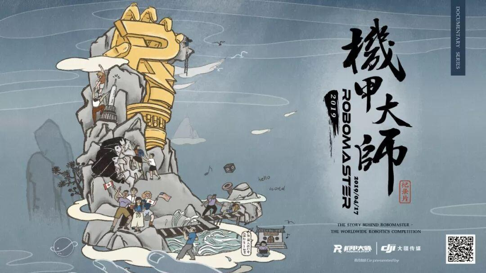
在传统印象里，理工生总是被大家调侃：
他们身处的学院男女比例悬殊，一个班只有一个女生；都9102年了，还坚持用波长520的绿光向女生表白！
甚至用机床制作耳坠、用LED灯焊光立方送女孩，并沾沾自喜。
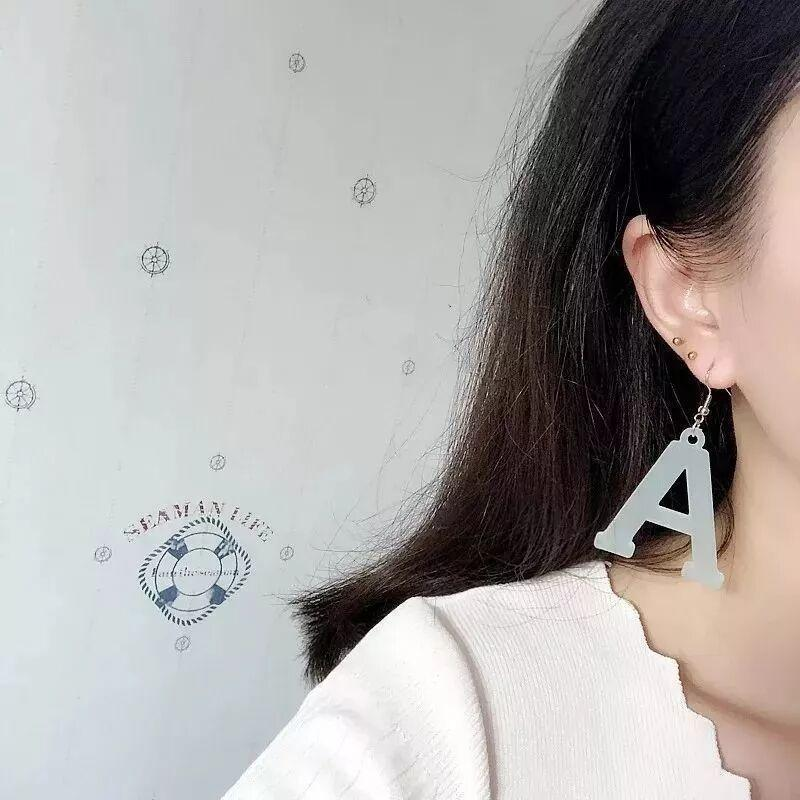
玻纤板刻的耳坠
其实，在现实生活中，他们还睿智浪漫，徒手保研出国，一不小心就用科技改变世界。
在各种美食、医疗纪录片盛行的时候，很少人注意到这个低调的群体。
他们是学校的机器人战队成员，正热血备战2019赛季的RoboMaster比赛。
这是他们赌上青春也想到达的地方。
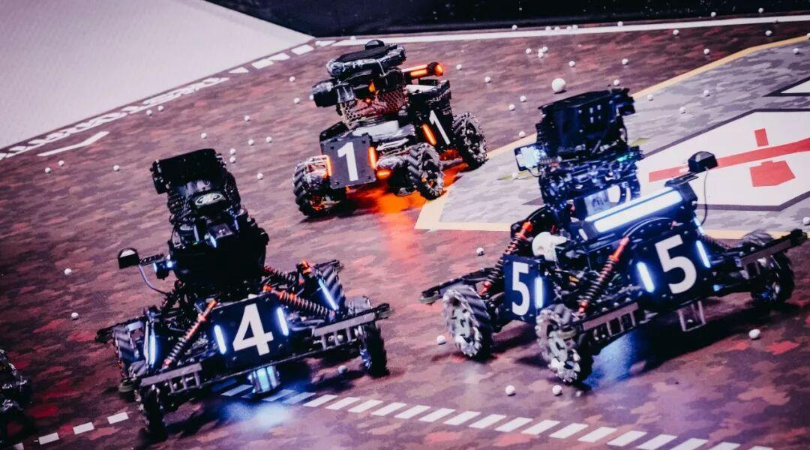
RoboMaster比赛现场
为此，他们要付出一年的时间，埋头研发，做出最强的机器人战队，在这个盛夏，与全球近 200 支战队，共同争夺那金灿灿的冠军奖杯。
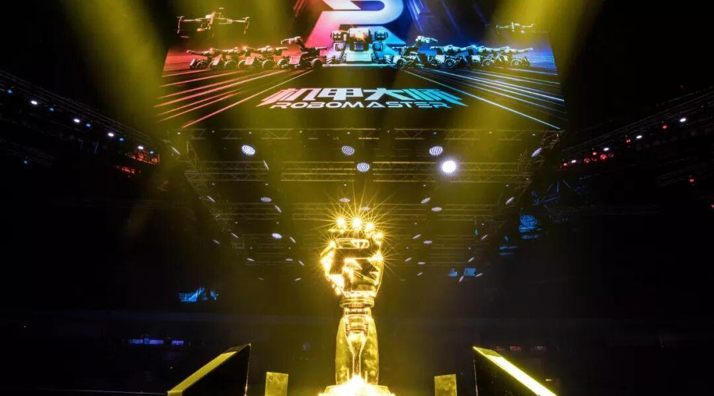
总冠军奖杯
在这个快餐式的时代，这些学生为何用一整年的时光参加机器人比赛？
━━━━━
纪录片第一集就走进了日本的福冈联合大学，Fukuoka Niwaka战队。
「我在日本做机甲」预告片
这是一支由8所日本高校的大学生组成的队伍。
队长是花守拓树，又高又壮的他，一张嘴就露出两排大牙和阳光的笑脸。
而队名里的Niwaka，在日语里就是「一群无经验的人聚在一起，挑战新事物」的意思。
队长 花守拓树
日本人，为什么会来参加中国的机器人比赛？
这还得说到Niwaka Soft公司的CEO古贺先生，他曾经在和中国的朋友聊天时，被对方吐槽：「日本的机器人真没意思。」
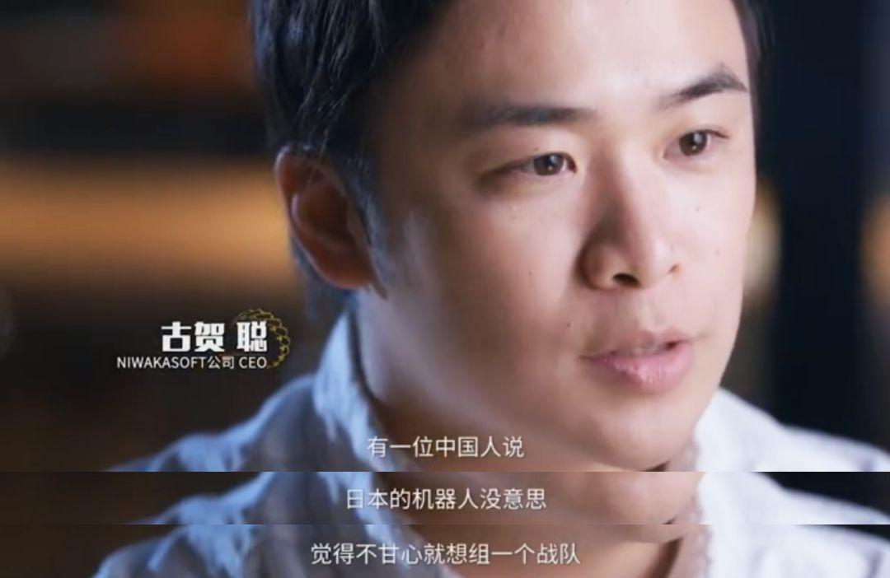
队伍创始人 古贺古贺一激动，就着手筹备资金，组起一支战队参加RoboMaster比赛，为日本机器人正名。
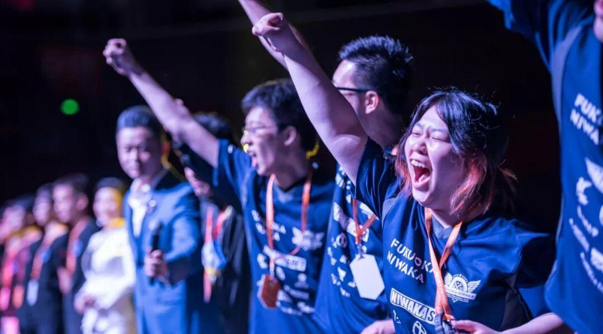
Fukuoka Niwaka战队队员
队员们也不辜负他的期望，把日本的工匠精神发挥到极致，给中国队伍来了个下马威。
有一个小细节是，别人的机器人都在粗糙的水泥地上跑，他们却经常拿着小刷子，轻轻清理轮子的灰尘。
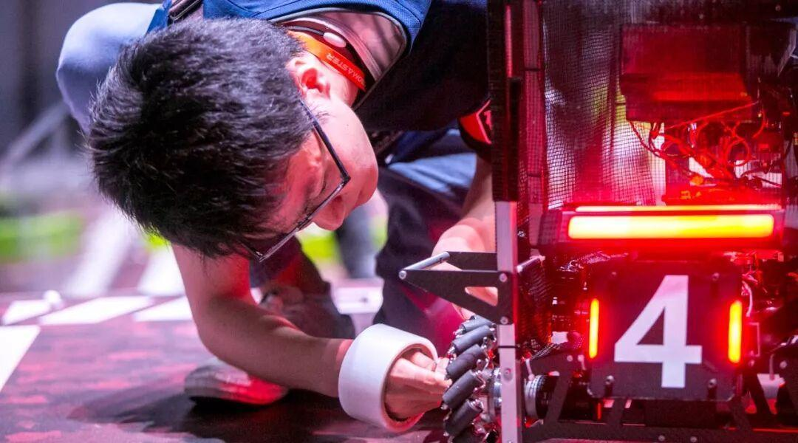
队员在检查机器人
这种精益求精的态度，也为他们的机器人保驾护航。
2018赛季，他们成了最大的黑马，第一次参赛就夺得国际队伍史上的最好名次——全球16强。
从此，所有人都对他们刮目相看，他们对机器人比赛的热情更一发不可收拾。
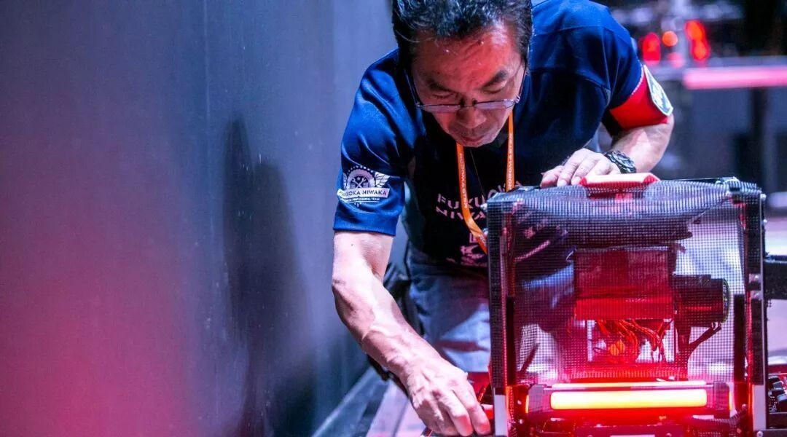
日本队员在赛场检修
日本是世界上机器人技术最发达的国家之一，早在30年前，日本的机器人比赛就已风靡亚洲。
但他们却谦虚地说：
「日本的机器人比赛不够酷，我想让这个中国比赛火遍日本！」这句话也被做成了海报。
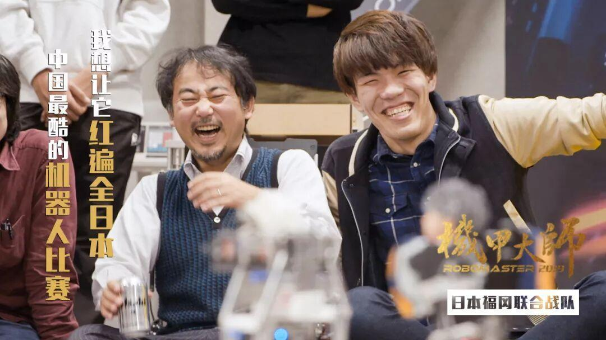
「机甲大师 2019」第一集海报
在这支充满钢铁气息的战队里，有一位小姐姐，叫辻（shí） 贵美花。
她最想发明的，是能够照顾老人和小孩的机器人，之前还制作了一个闻脚气味的小狗机器人。
队员 辻 贵美花
小狗一旦闻到香味，就会很开心地靠近，再用力嗅几下，然后兴奋地左蹦右跳。
如果闻到臭味，它就会俏皮地晕倒，警告主人该洗脚了。
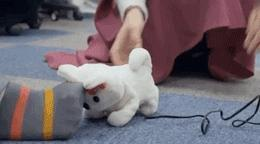
兴奋的小狗机器人
而做闻脚机器人的初衷，是因为一位父亲担心自己的脚熏到孩子，所以想在进家门之前，检查脚味。
不得不说，日本人的奇思妙想真是让人佩服。
在比赛中，辻 贵美花的人气很高，大家都叫她「日本小姐姐」。她一张无意间转身的抓拍，俘获了无数少男的心。
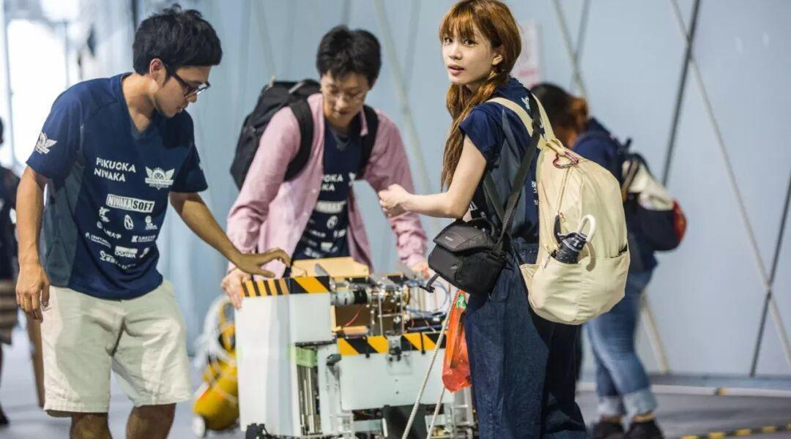
辻 贵美花的抓拍
成为RM网红，她自己也很惊讶，拍摄纪录片期间，还开玩笑地和朋友吐槽：
「我参加了中国的RM机器人比赛，他们迷之要贴身拍摄我的日常，很迷。」
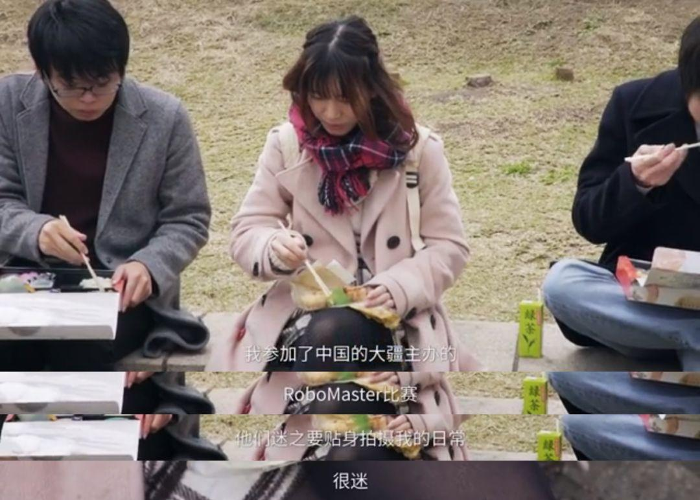
辻 贵美花跟朋友吐槽
行吧行吧，那我们去看其他队员吧。
Fukuoka Niwaka队伍的实验室在福冈市中心，队员大多是学生，每天都要搭1个小时的快线从学校去实验室。
往往完成机器人研发后，就错过了末班车，所以他们都会提前买好第二天的票，一大早回校上课。
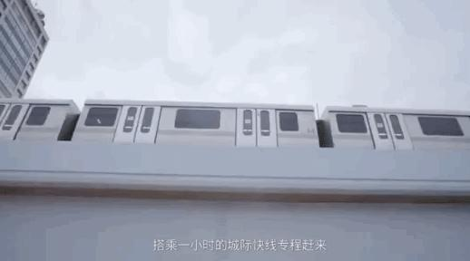
队员每天要搭乘的快线
由于学业和比赛双重压力，熬夜对所有工程师来说在所难免，但这都是痛并快乐的经历。
他们有一个小目标：「让RoboMaster在日本普及，培养出更多高技术人才。」
古贺经常说，这与销售额毫无关系，但人这辈子，总想抛下世俗，做一次内心想做的事。
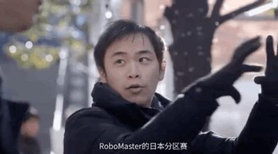
古贺在日本街头宣传赛事
梦想很美好，但现实很残酷。
公司可以资助一支战队，但绝对无法承受起全日本的队伍的经费。而找到一个愿意提供资金和场地的赞助商也是困难重重。
但不管面对什么，他们总会聚在一起：一起研究机器人、一起举杯相庆；
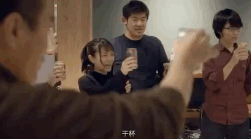
Fukuoka Niwaka队伍聚会
一起看小狗机器人上综艺节目、一起听因为高中被女孩甩了而自学吉他的花守弹唱……
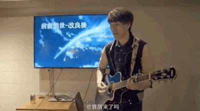
花守为队友弹唱
他们来自不同的城市和家庭，有日理万机的老板、有机器人公司员工、有还未毕业的学生，大家都毫无保留地为工程师梦想而付出，这一切都值了。
花守在纪录片中说的话
2019赛季即将开战，作为队员的他们，不知道会在哪一刻迸发耀眼的瞬间，但确定的是，他们会全力地向其他队伍发出挑战。
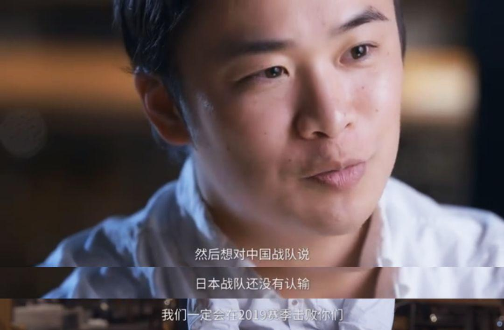
古贺向中国战队发起挑战
而古贺和他的团队，正全力以赴将RoboMaster推广至全日本，发起日本的分区赛。
日本街头
━━━━━
RoboMaster每年有近200支参赛队，每个队伍都有专属的故事。
中央民族大学，一个主攻文科的高校，路上抓5个人只有1个是理工生。
这群技术宅在学校格格不入，去年却在逆境中闯进总决赛，一时兴奋写下了一首在圈内传唱的Rap歌曲。
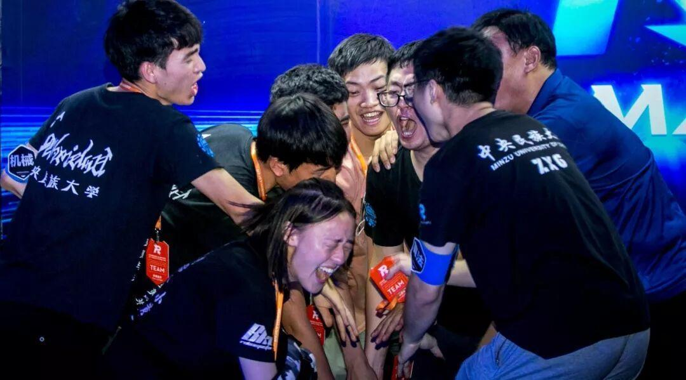
队员在赛场上助威
美国弗吉尼亚理工大学，一个被调侃「打一场输一场」的学校。面对玩笑，他们不仅没有生气，还自我娱乐。
有一次，他们的队伍被团灭，队长竟然拿起手机「咔擦咔擦」一顿自拍留念。
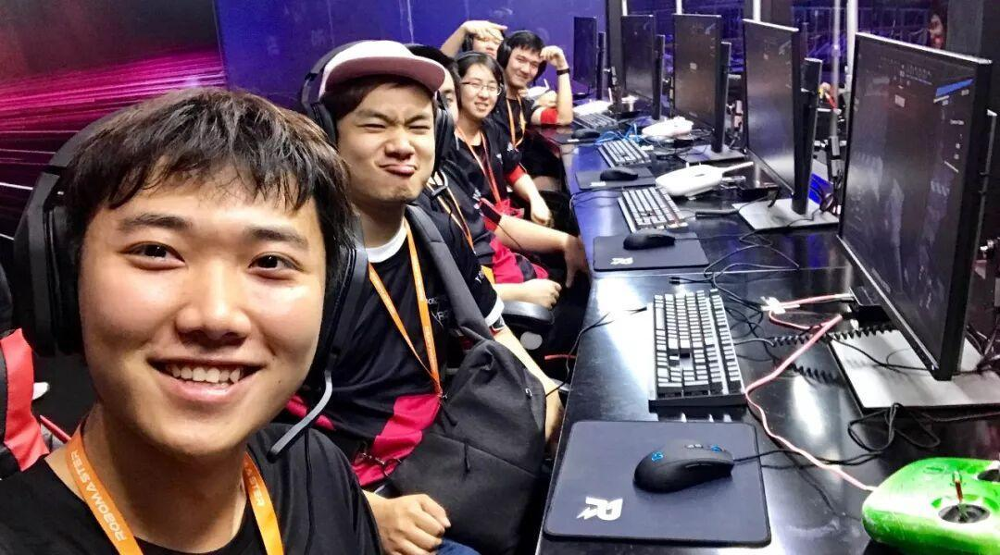
在操作间里自拍
很多人以为他们玩世不恭，却不知他们资金见底时，6个队员一下凑了3000刀！队长通宵解决BUG后，第二天又顶着黑眼圈继续开会。
他们早就知道比赛结果，但不会因此气馁，反而在重击下逐渐成长。
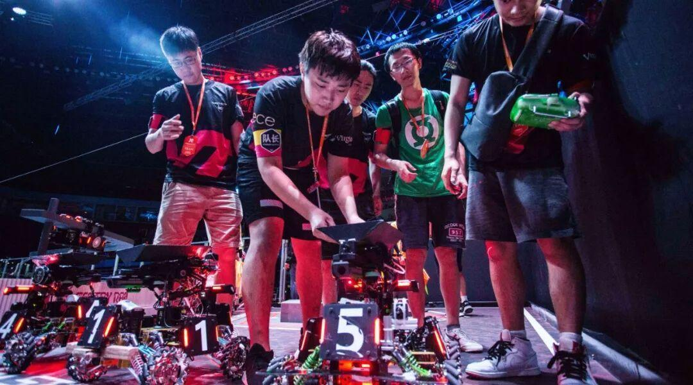
队员赛场上准备
还有电子科技大学和华南理工大学，他们曾经都是蝉联冠军宝座的老牌强队。
但新队员往往不懂前人的苦，备赛日渐懈怠。在捍卫荣誉的重压下，两位队长都对队员们破口喊出：
「你们输得起吗？！」
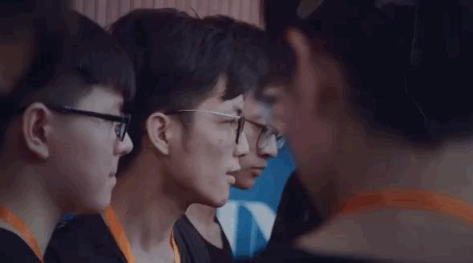
华南理工队长训斥队员
其实，对不同的选手来说，比赛的意义是不同的，最高荣誉也不一定是他们的目标。
但相隔万里，跨越十几个时区，大家都在为同一件事拼搏，这一刻他们没有人是孤单的。
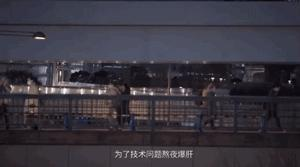
━━━━━
很多人感慨，这一代90后没有使命感。他们在温室中成长，没有经历过老一辈人的苦痛，眼里只看得到自己。
纪录片导演却说，这群大学生彻底改变了他对90后、00后的看法。
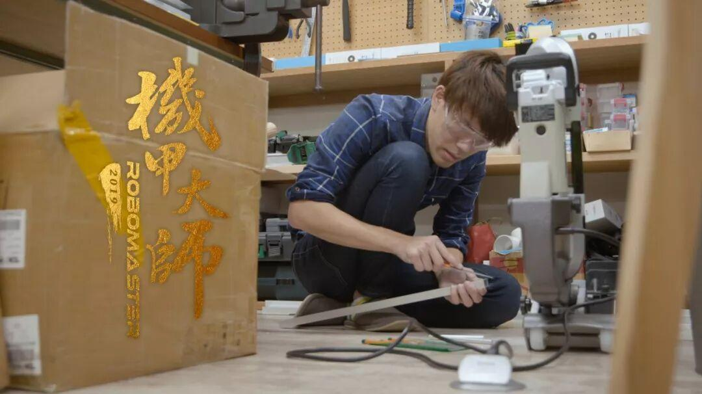
「机甲大师 2019」海报
他们很自我，但是身处战队时，他们会无条件地为集体付出。这种强烈的荣誉感是别的同龄人所没有的。
他们跟普通的大学生不一样，而这些东西都是RoboMaster所带来的。
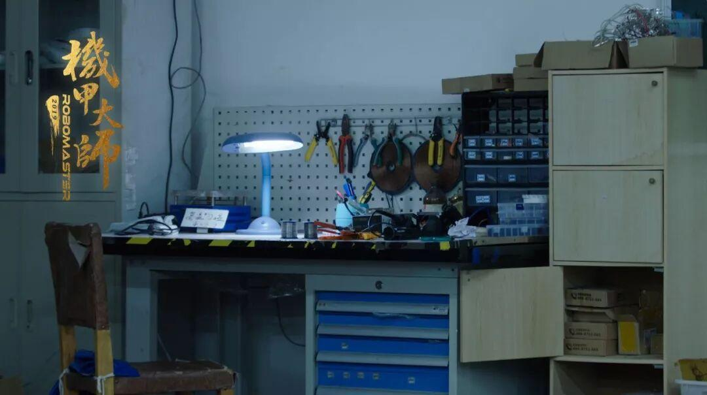
「机甲大师 2019」海报
「机甲大师 2019」是大疆传媒联合 RoboMaster共同推出的，第一季全网总播放量高达3844.3万次，单集最高播放量527.3万次。
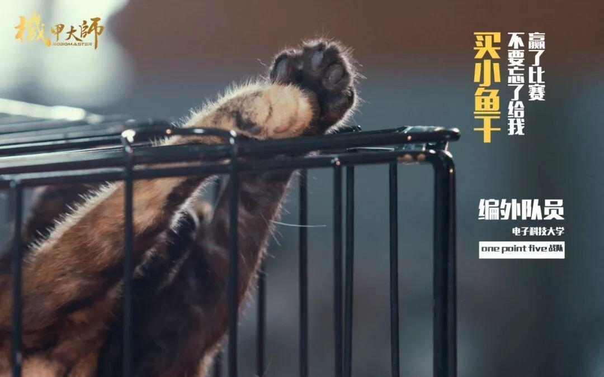
「机甲大师」第一季海报
今年，纪录片的海报有一些有趣的彩蛋。
比如，底下有一个人盘坐在寺庙前敲代码，旁边写着：「一朝误入此门中，从此红尘了如空。」
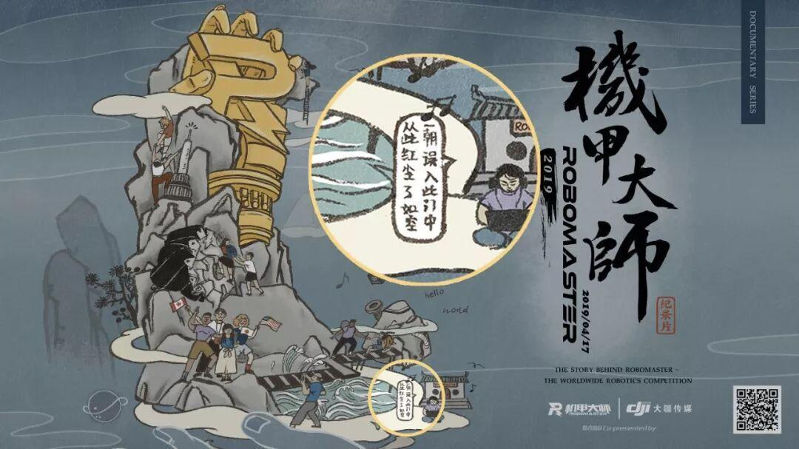
海报上的彩蛋
这是电子科技大学的队伍挂在实验门口的标语，用自嘲的方式调侃入坑比赛后的艰辛。
这扇门里面是什么，为什么他们无畏、执着地闯入？
今天，我们想邀请你一起探秘。
「机甲大师 2019」纪录片
4月17日起
优酷视频全网独播
每周三10:00AM更新
阅读原文
抢先看第一集
「福冈联合大学 我在日本做机甲」
━━━━━
策划：萝马编辑部
编辑、撰文：Y+Y


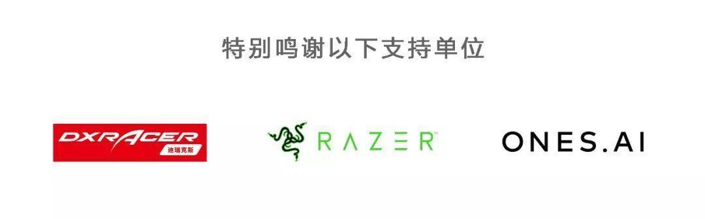